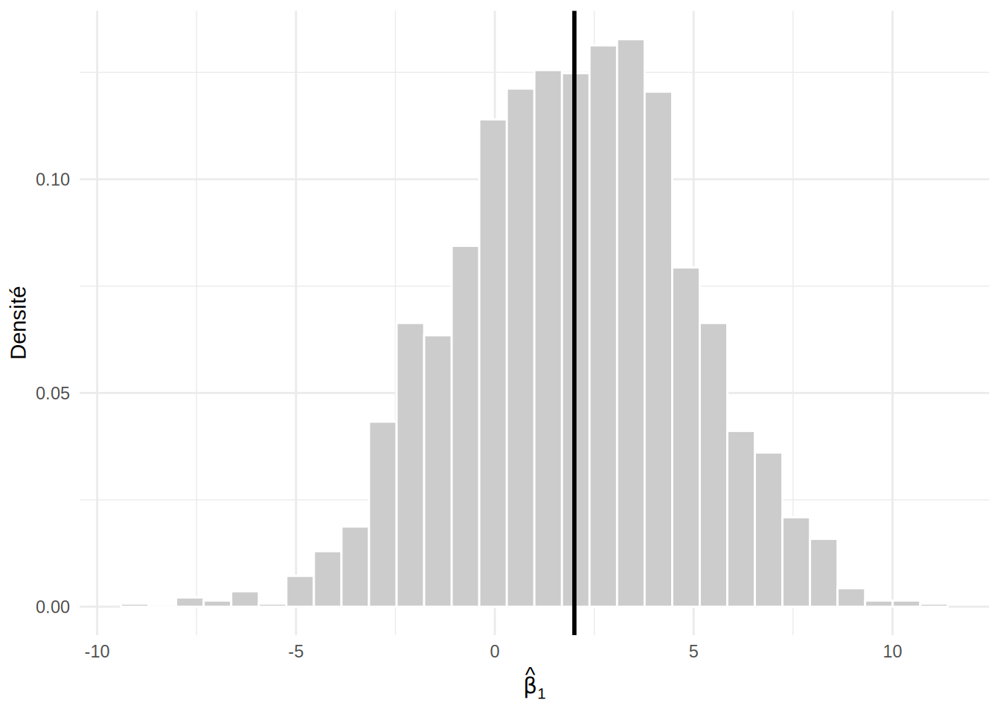

simuler_lineaire <- function(n, beta0 = 1, beta1 = 2, sigma = 3) {
x <- seq(0, 1, length.out = n)
y <- beta0 + beta1 * x + rnorm(n, mean = 0, sd = sigma)
data.frame(x = x, y = y)
}
B <- 2000
n <- 10
beta1 <- 2
set.seed(4300)
resultats <- replicate(B, {
dat <- simuler_lineaire(n, beta1 = beta1)
coefs <- coef(summary(lm(y ~ x, data = dat)))["x", ]
c(estimation = coefs[["Estimate"]], erreur_type = coefs[["Std. Error"]])
})
resultats <- as.data.frame(t(resultats))1 Simulations de Monte Carlo
Plusieurs propriétés des estimateurs et des tests vus dans ces notes ne sont connues que de façon asymptotique : la loi de \(\hb\) dans un GLM, la validité des intervalles de Wald, le niveau d’un test du rapport de vraisemblance. Ces résultats disent ce qui se passe lorsque \(n \to \infty\), mais pas si l’approximation est bonne pour le \(n\) dont on dispose. La simulation de Monte Carlo permet de répondre à cette question de façon empirique : on fabrique des jeux de données dont on connaît le vrai modèle, on applique la méthode étudiée, puis on observe son comportement sur un grand nombre de répétitions.
Ce chapitre présente cet outil sur le modèle linéaire, où les résultats exacts sont connus et permettent de vérifier que la simulation fonctionne. On s’en servira ensuite pour la régression logistique (Chapitre 2), pour comparer des méthodes de validation croisée (Chapitre 4) et pour étudier le compromis biais-variance en régression régularisée (Chapitre 5).
1.1 Principe
On cherche à calculer une quantité de la forme \(\theta = E[g(\boldsymbol Y)]\), où \(\boldsymbol Y\) est un jeu de données généré par un modèle entièrement spécifié et \(g\) est une fonction de ce jeu de données : un estimateur, l’indicatrice qu’un intervalle contienne la vraie valeur, l’indicatrice qu’un test rejette \(H_0\), etc. Cette espérance est rarement calculable explicitement.
Définition — Simulation de Monte Carlo
On génère \(B\) jeux de données indépendants \(\boldsymbol Y^{(1)},\ldots,\boldsymbol Y^{(B)}\) à partir du modèle spécifié et on estime \(\theta\) par la moyenne
\[ \hat\theta_B = \frac{1}{B}\sum_{b=1}^{B} g\left(\boldsymbol Y^{(b)}\right). \]
Par la loi des grands nombres, \(\hat\theta_B \to \theta\) lorsque \(B \to \infty\).
Comme \(\hat\theta_B\) est elle-même une quantité aléatoire, elle comporte une erreur, appelée erreur de Monte Carlo.
Propriété — Erreur de Monte Carlo
L’estimateur \(\hat\theta_B\) est sans biais pour \(\theta\) et
\[ Var\left[\hat\theta_B\right] = \frac{Var\left[g(\boldsymbol Y)\right]}{B}. \]
Lorsque \(g\) est une indicatrice, \(\theta = p\) est une probabilité (par exemple, le niveau de confiance réel d’un intervalle) et l’erreur-type de Monte Carlo est estimée par
\[ \sqrt{\frac{\hat p_B\,(1-\hat p_B)}{B}}. \]
Par exemple, avec \(B = 1000\) répétitions et une couverture réelle de \(0,95\), l’erreur-type de Monte Carlo est \(\sqrt{0,95\times 0,05/1000}\approx 0,007\). Un résultat de \(0,94\) est donc compatible avec \(0,95\), alors qu’un résultat de \(0,91\) ne l’est pas. Pour diviser l’erreur par deux, il faut multiplier \(B\) par quatre.
Remarque — Erreur de Monte Carlo et erreur statistique
Le nombre de répétitions \(B\) contrôle uniquement la précision de la simulation, qu’on peut rendre aussi petite qu’on veut. Il ne change rien à la performance de la méthode étudiée, qui dépend de la taille d’échantillon \(n\) de chaque jeu de données simulé. Il ne faut pas confondre les deux : on augmente \(B\) pour mieux estimer la performance d’une méthode à \(n\) fixé, et on fait varier \(n\) pour voir comment cette performance change.
1.2 La recette
Une étude par simulation suit presque toujours les mêmes étapes.
Fixer le vrai modèle : les valeurs des paramètres, la taille d’échantillon \(n\), les valeurs des variables explicatives et la loi des erreurs.
Écrire une fonction qui génère un jeu de données à partir de ce modèle.
Répéter \(B\) fois : générer un jeu de données, appliquer la méthode étudiée (ajuster le modèle, construire un intervalle, faire un test) et conserver le résultat.
Résumer les \(B\) résultats par une moyenne, accompagnée de son erreur de Monte Carlo.
En R, on fixe la graine du générateur de nombres pseudo-aléatoires avec set.seed() avant la simulation, afin que les résultats soient reproductibles. La fonction replicate() répète une expression \(B\) fois.
Définition — Résumés usuels
Soit \(\hat\beta^{(b)}\) l’estimation obtenue sur le \(b^{\text{e}}\) jeu de données et \([L^{(b)}, U^{(b)}]\) l’intervalle de confiance correspondant. Pour un paramètre dont la vraie valeur est \(\beta\), on estime
\[ \begin{aligned} \text{le biais} &: \quad \frac{1}{B}\sum_{b=1}^B \left(\hat\beta^{(b)}-\beta\right),\\ \text{l'erreur quadratique moyenne} &: \quad \frac{1}{B}\sum_{b=1}^B \left(\hat\beta^{(b)}-\beta\right)^2,\\ \text{la couverture} &: \quad \frac{1}{B}\sum_{b=1}^B \mathbb{1}\left\{L^{(b)} \leq \beta \leq U^{(b)}\right\}. \end{aligned} \]
De même, le taux de rejet d’un test, calculé sur des données générées sous \(H_0\), estime son niveau réel, et calculé sous une alternative, il estime sa puissance.
1.3 Exemple : couverture d’un intervalle de confiance
On considère le modèle \(Y_i = \beta_0 + \beta_1 x_i + \epsilon_i\) avec \(\epsilon_i \sim \mathcal{N}(0,\sigma^2)\), où \(\beta_0 = 1\), \(\beta_1 = 2\), \(\sigma = 3\) et où les \(x_i\) sont \(n\) valeurs également espacées entre 0 et 1. Dans ce modèle, l’intervalle de confiance de la section sur l’inférence du chapitre 1, basé sur le quantile de la loi de Student, a une couverture exactement égale à \(1-\alpha\). On va le vérifier par simulation, puis le comparer à l’intervalle obtenu en remplaçant le quantile de Student par celui de la loi normale, qui n’est valable qu’asymptotiquement.
Exemple — Distribution de \(\hat\beta_1\) et couverture avec \(n = 10\)
On commence par définir la fonction qui génère un jeu de données, puis on répète \(B = 2000\) fois l’ajustement du modèle en conservant \(\hat\beta_1\) et son erreur-type.
Le biais de \(\hat\beta_1\) est proche de zéro, comme le prévoit la théorie :
mean(resultats$estimation) - beta1[1] -0.0657941Chaque point de la distribution ci-dessous est une estimation de \(\beta_1\) sur un jeu de données différent. Elle est centrée sur la vraie valeur et a la forme d’une loi normale, ce qui correspond à \(\hat\beta_1 \sim \mathcal{N}\left\{\beta_1, \sigma^2\left[(\boldsymbol X^\top\boldsymbol X)^{-1}\right]_{22}\right\}\).
ggplot(resultats, aes(x = estimation)) +
geom_histogram(aes(y = after_stat(density)), bins = 30,
fill = "grey80", color = "white") +
geom_vline(xintercept = beta1, linewidth = 1) +
labs(x = expression(hat(beta)[1]), y = "Densité") +
theme_minimal()
Pour la couverture, on construit pour chaque jeu de données les deux intervalles \(\hat\beta_1 \pm q\,se(\hat\beta_1)\), avec \(q\) le quantile de Student à \(n-2\) degrés de liberté ou celui de la loi normale, et on calcule la proportion des intervalles qui contiennent \(\beta_1 = 2\).
couverture <- function(res, beta, quantile) {
mean(abs(res$estimation - beta) <= quantile * res$erreur_type)
}
c(
student = couverture(resultats, beta1, qt(0.975, df = n - 2)),
normale = couverture(resultats, beta1, qnorm(0.975))
)student normale
0.9515 0.9180 L’erreur-type de Monte Carlo sur ces proportions est d’au plus \(0,007\). L’intervalle de Student a bien une couverture compatible avec \(0,95\), alors que celle de l’intervalle fondé sur la loi normale est nettement trop faible : avec \(n = 10\), les intervalles sont trop étroits.
On peut maintenant faire varier la taille d’échantillon pour voir à partir de quand l’approximation normale devient acceptable.
Exemple — Couverture en fonction de \(n\)
couverture_n <- function(n, B = 2000, beta1 = 2) {
res <- replicate(B, {
dat <- simuler_lineaire(n, beta1 = beta1)
coefs <- coef(summary(lm(y ~ x, data = dat)))["x", ]
c(estimation = coefs[["Estimate"]], erreur_type = coefs[["Std. Error"]])
})
res <- as.data.frame(t(res))
data.frame(
n = n,
student = couverture(res, beta1, qt(0.975, df = n - 2)),
normale = couverture(res, beta1, qnorm(0.975))
)
}
set.seed(4300)
do.call(rbind, lapply(c(5, 10, 20, 50, 100, 500), couverture_n)) n student normale
1 5 0.956 0.8690
2 10 0.954 0.9210
3 20 0.951 0.9340
4 50 0.949 0.9420
5 100 0.957 0.9555
6 500 0.953 0.9525La couverture de l’intervalle de Student reste autour de \(0,95\) quel que soit \(n\), aux erreurs de Monte Carlo près. Celle de l’intervalle fondé sur la loi normale s’en approche seulement à mesure que \(n\) augmente, ce qui est cohérent avec le fait que la loi de Student converge vers la loi normale.
1.4 Précautions
Une simulation ne démontre rien : elle décrit le comportement d’une méthode dans les configurations simulées, et seulement dans celles-ci. Une couverture de \(0,95\) obtenue avec \(n = 100\), \(\sigma = 3\) et des erreurs normales ne garantit pas le même résultat avec des erreurs asymétriques ou une taille d’échantillon différente. Il faut donc choisir des configurations représentatives de la situation qui nous intéresse et, dans la mesure du possible, en faire varier plusieurs.
Il faut aussi garder en tête les limites suivantes.
Le choix du vrai modèle est arbitraire. Les conclusions valent pour le modèle simulé, qui n’est jamais exactement celui des données réelles.
Les résultats sont aléatoires. On rapporte toujours l’erreur de Monte Carlo, ou on choisit \(B\) assez grand pour qu’elle soit négligeable par rapport aux différences qu’on cherche à détecter.
Il faut s’assurer que le code est correct en le testant sur un cas dont la réponse est connue, comme on l’a fait ici avec l’intervalle de Student.